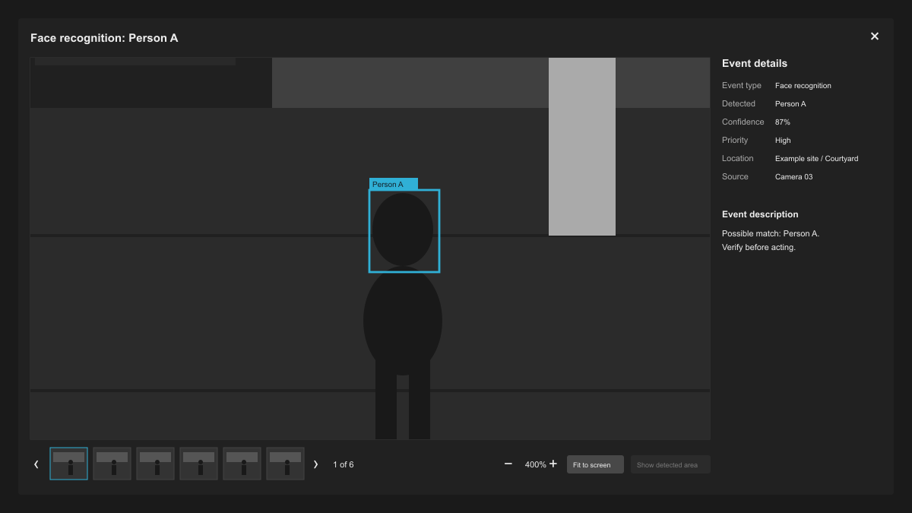

Modirum Platforms · Critical communications
NSC3
Designing new capabilities as part of a coherent product.
Context
NSC3 is a real-time situational-awareness and secure-communications platform for control-room operators and mobile field personnel. It brings video, location information and communications into a shared operational picture, including in degraded network environments.
I work across Modirum Platforms’ critical-communications portfolio, primarily as NSC3’s sole designer. Within R&D, I help shape product direction, define requirements and design operator workflows, collaborating with product and engineering through implementation.
Problem
A customer request is the starting point. The design has to work across the product.
The Events concept is one example. Partner video analytics, body-camera activations and NSC3’s own AI detections all needed a place in the experience. The requests left fundamental questions open: should Events live in Task chat or a dedicated log? What information matters to an operator? When should a detection become a Task?
The challenge was to define one understandable workflow across these sources, while preserving Tasks as the place where teams coordinate their response.
Process
I defined a shared Event concept and designed a dedicated log with inspection on the same page. I organised the information around the operator’s questions: what happened, where, when, how it was detected, what has been done about it and what can be done next.
Operators inspect an Event before deciding whether to create a Task or send an Alert. Personal notification criteria let them decide in advance which Events should demand their attention.
Solution
From a detection to a deliberate response.
Inspect and coordinate a response
Keep the log visible during inspection. The first design stacked the inspection area above the log. Later iterations placed the selected Event in an adjacent panel, keeping the surrounding Events visible while the operator examines the evidence and available actions.

- Inspect alongside the log. Review a selected Event without leaving the surrounding activity.
- Organise evidence. Group the detection, supporting media and relevant details for assessment.
- Continue into action. Provide routes into established Task and Alert workflows when a response is needed.
- Coordinate the response. Once a Task or Alert is active, teams coordinate through the Task; the Alert tracks recipient responses.
The response continues beyond Event inspection. I refined the requirements and designed the Web and Mobile experiences for Targeted Alerting: reaching selected recipients by SMS and LiveLink, tracking acknowledgements and keeping the response connected to a Task.
Manage competing demands for attention
The interface evolved as field reports exposed another problem: too many Events competing for attention. I reframed the next phase around personal subscriptions, notifications and better inspection. Subscriptions let Controllers define which Events should notify them; filtering narrows the log they are reviewing. In the inspection image above, the notification bells show which Events match subscriptions, and the “Notified events” filter helps operators focus on those matches. These capabilities were deployed to a later face-recognition POC.
Resolving a design disagreement: subscription placement
Design reviews often involve debating several possible solutions. With Event subscriptions, I thought the controls belonged on the Events page: they were closely related to the Events, and users would find them in context. The product director thought users would look under Manage, based on his experience and analysis of competing products.
We couldn’t test the alternatives with users at that point. I prepared designs for both options and brought their pros and cons to a team review. We discussed them and went with the product director’s preference.
The discussion was useful because it brought discoverability into focus. As I developed the Manage design, I paid particular attention to how the subscriptions were placed and labelled so users could find them and recognise them as their own.

Design and review behaviour in code
I follow online discussion about how AI is changing UX design. Given time and resources to develop an AI-assisted design workflow, I established a prototyping environment within NSC3’s development codebase.
I adapted the existing design system by aligning Figma variables with code tokens and adding guidance for coding agents. Together with real product components, these foundations let agents build prototypes that follow the product’s conventions.
I direct agents to build and refine interface states and flows, retaining Figma for key layouts. The scrum team can review working interactions, and I need less state duplication and prototype wiring in Figma. Prototypes use fictional data and simulated services.
Modern product development approachRapid AI-native prototyping
key layouts
code prototype
and team review
starting point
The workflow in practice: Event image viewer. I used Figma to establish the layout and a coded prototype to refine zooming, panning and behaviour at narrower window sizes. I completed the design and prototype on the same day, then reviewed the interaction with our Web developer.

Our Web developer used the image-viewer prototype code as a starting point for implementation, describing it as mostly usable as is.
Impact
From ambiguous requests to implemented POC workflows.
Developers implemented the Events concept, and it was deployed to partner POCs. Subscriptions, notifications and filtering followed in the later face-recognition POC, while Targeted Alerting was deployed for its own customer exercise.
Alongside these product capabilities, I established a code-based workflow for design reviews and implementation handoff. The scrum team has used it to review new interactions, and the image-viewer prototype supplied a developer with code to start implementation.